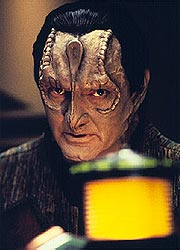
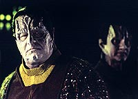
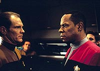
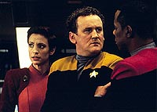
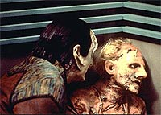

MANCHETE
DO EPISDIO
Depois
deste episdio, Deep Space
Nine nunca mais ser a mesma srie
Episdio
anterior | Prximo
episdio
Sinopse:
Data Estelar:
desconhecida.
O'Brien e Bashir almoam no Replimat da estao, ainda sem notcias sobre o paradeiro de Odo e Garak. O chefe chamado as pressas ao OPS por Kira, mas bizarras leituras dos sensores de DS9 tambm o deixam perplexo. Para surpresa de Sisko e cia. a frota de Tain comea a sair da camuflagem rumando para a Fenda Espacial. No acontece nenhum conflito e a frota segue tranqilamente para o seu destino do quadrante Gama.
A bordo da nave capitnia de tal Frota, Garak e Tain lembram os velhos tempos. Eis que entra na sala um oficial da Tal Shiar, chamado coronel Lovok. Ele fica intrigado com a presena de Garak ali e avisa que vai ficar de olho nele. A frota segue em dobra seis para evitar deteco pelos Jem'Hadars, mesmo atravs do dispositivo de camuflagem. Odo est preso em aposentos selados com campos de fora. Tain incumbe Garak de convencer Odo a cooperar com informaes sobre o seu povo.

Garak faz uma "visita" a Odo, bastante aborrecido por ser mantido prisioneiro. O comissrio comea a perceber uma ponta de culpa na j tradicional metralhadora de mentiras do Cardassiano. Garak obviamente nega tal sentimento e passa adiante o "recado" de Tain. Odo nada revela. Os
outros oficiais de DS9 (incluindo Eddington) assistem a uma mensagem enviada por Tain ao Comando Central Cardassiano em que ele explica o seu plano (uma mensagem similar fora enviada tambm para o senado Romulano -- ambos os governos negam qualquer envolvimento e sinalizam que no vo intervir). Um certo almirante Toddman da Frota Estelar avisa Sisko para preparar medidas para um possvel contra-ataque dos Jem'Hadars, seja o plano de Tain bem-sucedido ou no. Sisko pede permisso para tentar montar uma operao para tentar resgatar Odo, mas o almirante nega.
Toddman desliga e Sisko, aps consultar Eddington sobre a chegada de reforos da Frota Estelar, faz planos para uma misso para resgatar o comissrio, com partida dentro de duas horas. Obviamente toda a tripulao voluntria. Quando eles esto de partida, chega uma nova mensagem do almirante, ordenando a suspenso da misso. Sisko no responde uma vez que a mensagem "estava com muito rudo". A Defiant parte para o quadrante Gama.
O plano de Tain descamuflar a frota em rbita do planeta dos Fundadores e iniciar um bombardeio macio. Tain ainda desconfia da possvel existncia de defesas planetrias secretas, algo que Odo pode ter alguma informao a respeito. Garak argumenta que tudo que Odo sabe ele colocou em seus relatrios para a Frota Estelar. Tain no acredita nisso e Garak sabe que o seu mentor no ir confiar nele enquanto ele no interrogar o comissrio. Tain lhe oferece um novo dispositivo desenvolvido pela Ordem (um prottipo) que tem por objetivo impedir que um metamorfo mude de forma. Lovok fica surpreso com a existncia de tal dispositivo e Garak parte para a cela de Odo.

A Defiant sai subitamente da camuflagem. O'Brien no sabe o que est errado at que Eddington confessa ter sabotado o dispositivo de camuflagem sob ordens do almirante Toddman para forar Sisko a voltar. O'Brien vai fazer os reparos necessrios e Eddington diz a Sisko que apenas estava cumprindo uma ordem especfica e que pode contar com ele para o resto da misso. Sisko concorda.
Garak chega a cela de Odo com o dispositivo descrito por Tain. A princpio Odo faz pouco da preparao de Garak para interrog-lo, mas quando Garak liga o aparelho e Odo no pode mudar de forma, o comissrio fica imediatamente preocupado. Falta pouco para que ele tenha que se regenerar e ele no sabe o que vai acontecer se ele no puder retornar ao seu estado gelatinoso. Garak insiste que, como ele, o comissrio valoriza muito a sua privacidade e com certeza h alguma coisa que ele no partilhou em seus relatrios. Odo continua a dizer que no existe nada a ser dito.
Algum tempo depois, a forma de Odo se apresenta grotesca, como se toda umidade tivesse sido removida. Partes ressecadas comeam a cair no cho. Odo d um grito de suprema agonia. Garak de desespera e se aproxima do comissrio, praticamente implorando que Odo diga algo, mesmo uma mentira, para que ele possa parar a tortura. Odo diz que quer voltar para casa, Garak pensa que o comissrio se refere a DS9, mas o que o metamorfo mais quer voltar para o seu povo, apesar de tudo. Garak desliga o dispositivo e Odo em seu limite absoluto vai se regenerar. Garak fica arrasado por tudo o que fez. O'Brien termina os reparos e a Defiant continua o seu curso para o planeta dos Fundadores.
Garak diz que no conseguiu extrair nenhuma informao relevante de Odo. Tain quer eliminar o comissrio, algo com o qual Garak no concorda, mas Lovok que convence o mais velho Cardassiano a permitir que Odo seja levado de volta a Romulus para anlise. Eles entram na nebulosa Omarion e rumam para o planeta dos Fundadores.
A frota ataca brutalmente o planeta, mas aps a primeira salva de tiros os sinais vitais no sofrem variaes. Tais sinais esto sendo gerados artificialmente. Uma frota de 150 naves Jem'Hadar deixa a nebulosa. A frota de Tain cai em uma emboscada do Dominion. Os Jem'Hadar atacam sem piedade destruindo nave aps nave. Lovok diz que eles no tm um caminho para fugir e comanda que a frota permanea ali na batalha.
Garak escapa sorrateiramente da ponte e derruba o guarda da cela de Odo, libertando o comissrio. Lovok chega e entrega a Odo um Padd contendo informaes para que ele possa acessar o explorador e fugir. Lovok um Fundador. "Lovok" explica que o plano do ataque ao planeta dos Fundadores foi idia de Tain, mas quando os Fundadores descobriram tal coisa, fizeram de tudo para que ele pudesse levar o plano a cabo. A eliminao da Ordem e da Tal Shiar fundamental para a estratgia do Dominion com relao ao quadrante Alfa. Os nicos reais inimigos que faltam so a Federao e o Imprio Klingon.
"Lovok" pede que Odo se junte ao Grande Elo com os do seu povo e o comissrio recusa uma vez mais e o outro Fundador se despede e se transporta da nave. Garak vai para ponte tentar salvar Tain. O seu mentor o nico vivo, sentado na cadeira de comando. Mostrando sinais de insanidade, Tain parece distante da gravidade da situao. Garak tenta tir-lo de l, mas tarde demais para ele. Odo nocauteia Garak e o arrasta dali at o explorador. O ex-chefe da Ordem Obsidiana continua a falar, como se Garak ainda estivesse ali.

Odo e Garak chegam ao explorador e (recebendo disparos) tentam fugir em meio grande batalha que se realiza. Seus escudos caem a zero. Os disparos parecem parar, mas o fim parece inevitvel. Garak pede desculpas pelo que fez e Odo diz que no aprova o que o Cardassiano fez, mas entende os seus motivos (voltar ao seu lar). De repente a Defiant se descamufla e inicia um massivo ataque aos Jem'Hadars e transporta os dois a bordo. Finalmente a Defiant consegue deixar a rea com uma manobra arrojada de Sisko.
De volta estao, Sisko ouve de Toddman que nenhuma nave da frota de Tain sobreviveu e que no ir prestar acusaes formais a ningum a bordo da Defiant, ao menos no desta vez. Mas diz que na prxima vez ou levar Sisko a uma corte marcial ou ir promov-lo. E que de qualquer maneira o comandante estar bem encrencado.
Garak entra em sua alfaiataria, completamente destruda. Em um espelho, sujo de fuligem, ele pode ver Odo porta. sua prpria e privada maneira eles marcam o incio de uma amizade que nasce da sua solido compartilhada.
Comentrios:
A concluso de episdios duplos em Jornada muitas vezes decepcionante, para dizer o mnimo. Felizmente pode-se dizer que tal "regra" no se mostrou verdadeira aqui. O episdio transforma o Dominion em um adversrio absolutamente formidvel (com incrvel poder de manipulao) e estabelece a trajetria trgica e paralela entre Garak e Odo. Ainda d a Sisko uma chance de desobedecer a ordens diretas e mostrar a melhor forma da Defiant em batalha. Mais detalhes, sem precisar ser esfaqueado pelas costas pelo seu melhor amigo no processo, nas linhas abaixo.
Os maiores potenciais problemas de trama vm dos eventos que levam ao plano de resgate de Sisko. Restam poucas dvidas de que a melhor soluo dramtica viria com Odo e Garak deixando a rea com o explorador (com a colaborao explcita de "Lovok") e comentando entre si a batalha, vista ao longe enquanto Sisko prepararia DS9 para um possvel ataque Jem'Hadar.
Qualquer trama que envolve uma operao de resgate e salvamento (entre outras "tramas da tarefa" (TM)) parece esbarrar em uma famlia de clichs. Que existiram aqui, mas foram tratados de uma forma eficiente e inteligente. O "teaser" funcionou extremamente bem, pegando Sisko e cia. de surpresa. A mensagem de Tain foi mosca e a preocupao de Toddman foi absolutamente justificvel. O fato de Sisko pedir voluntrios para uma misso suicida (ou uma que poderia acabar em uma corte marcial) e todos os oficiais seniores aceitarem um clich, mas perdovel aqui.
(O fato de Sisko ter ido atrs de Odo, pode ser parcialmente justificado, se pensarmos que o comandante j deixou o comissrio na mo com relao Frota por duas vezes nesta temporada. Uma em
"The Search" e a outra em "The
Abandoned", ainda que seja uma coisa que ele no poderia admitir, nem mesmo para Dax. O que funciona em benefcio do personagem aqui.)

Sisko e cia. tinham (por exigncia da trama) que chegar atrasados para a batalha e tivemos a sabotagem de Eddington. Foi original a maneira como a questo foi tratada. Eddington tinha ordens diretas do almirante para tentar impedir Sisko de chegar ao seu destino e cumpriu exatamente isso, se livrando que qualquer ao por parte de Toddman. Foi direto e imediato com Sisko quanto a isso e se livrou de uma ao por parte do comandante tambm. E seguiu na misso.
(A chegada da Defiant no ltimo momento para salvar Odo e Garak mais um bvio clich, apesar da cena funcionar maravilhosamente bem em seus termos, com a vinheta da srie tocando no momento em que a nave deixa a camuflagem.)
Sobre a fuga do explorador de Garak e Odo... J havia sido estabelecido na srie (em
"The Jem'Hadar") que um explorador pode sobreviver a vrios disparos de caas Jem'Hadar. Se foi "Lovok" que ordenou um cessar-fogo ou se este foi apenas uma conseqncia da dinmica catica da batalha, isso no importa. O que importa que, antes da chegada da Defiant, Garak e Odo disseram o que tinham que dizer um para o outro.
Em uma segunda assistida, podemos pegar inmeras pistas sobre o fato de "Lovok" ser de fato um Fundador. Inclusive ser ele quem d a ordem para que a Frota no tente fugir. A cena (onde Odo decide uma vez mais no se unir ao Grande Elo) entre "Lovok", Odo e Garak um eco da cena final da primeira parte com Tain, Garak e Odo. O posicionamento dos atores faz o eco ainda mais forte.
Provavelmente o Tain do passado no teria cado na manobra do Dominion, no teria corrido tantos riscos. Mas este Tain velho e sem maiores perspectivas de vida e viu uma chance de ouro para recuperar a glria no comando da Ordem em uma misso histrica. Sua vida de aposentado (com Mila) no valia mais a pena. O eco da conversa entre Garak e Bashir chega a ser cruel, se contraposta aos ltimos momentos do personagem, mentalmente destroado, falando para a audincia sobre o Dominion (em uma excelente "quebra da quarta parede").
O episdio mostra claramente que Garak no a mesma pessoa dos seus tempos da Ordem. Na primeira vez que ele conversa com Odo para obter informaes, o comissrio j nota claramente que o Cardassiano se sente culpado pelo que fez. Garak tortura Odo e se tortura ao mesmo tempo e pede algo -- mesmo uma mentira -- para encerrar a sesso. De fato Odo revela algo que nunca revelou a ningum, mas que no tem serventia nenhuma na misso -- a no ser destroar internamente Garak.
Sobre a interao entre Odo e Garak, continua vlido tudo o que foi dito quando da exibio de
"Improbable Cause", tanto em termos de caracterizao, dinmica ou do calibre dos atores envolvidos. A cena final protagonizada pelos dois provavelmente a mais bem escrita, dirigida (com uma fotografia absolutamente original em termos de
Jornada) e atuada da histria da franquia. Brilhante!
Saem o forte toque teatral e a "tcnica de mltiplos nveis" (TM) de Avery Brooks na direo e entram em cena as angulaes extremas e closes fechados de David Livingston. Os resultados so igualmente impressionantes. Parecendo o caso clssico do: "melhor possvel para cada tipo de episdio". difcil fazer algo melhor que a cena de tortura de Odo e a cena final na alfaiataria de Garak.

Foi definitivamente uma boa semana para Brooks e para todo o elenco regular, mas o destaque fica para Ren Auberjonois. O amlgama de emoes que ele projetou enquanto torturado digno de uma placa na Paramount. Aqui ns tivemos: dois dos personagens mais importantes da srie e mais queridos dos fs se torturando um ao outro (considerando que Garak tambm se torturou no processo). Os motivos de tal fato so completamente pessoais e o que movia um era o que o outro escondia. E tais "razes pessoais" s seriam resolvidas no ltimo episdio da srie. Comparando com as cenas de tortura envolvendo Madred e Picard em
"Chain of Command, Part II", essas ltimas parecem impessoais demais e temticas demais e da muito menos intensas e definitivamente efmeras.
Parece que Robinson simplesmente no consegue atuar mal. Destaques para o ator nas cenas da tortura de Odo, quando Garak tenta salvar Tain, e na cena final. Dooley sem dvida um amuleto de sorte. So quatro participaes em episdios e quatro clssicos. As ltimas palavras de Tain na ponte so inesquecveis para todos os fs da srie. Orser foi uma grata surpresa, por interpretar um personagem to complicado e ter que disputar tempo de tela com tantos atores capazes e to mais experientes com os seus personagens e com a srie como um todo. Marshall parece mestre em viver um personagem que certinho at irritar e ainda assim parece estar escondendo algo (o que perfeito para o que acontece com Eddington mais tarde na srie). Russon foi uma grata surpresa (parece difcil escalar bons almirantes em
Jornada). Schenker cumpriu bem o seu papel e a sua expresso quando sua personagem visualiza a frota Jem'Hadar escondida mais um clssico entre os fs.
A meno de que Dukat esteve envolvido em "negcios com mercadores de armas" pode ser uma referncia "Trilogia do Crculo" que abre a segunda temporada. Apesar de parecer ser um assunto muito mais antigo entre Garak e Dukat.
Tain diz que se aposentou h cerca de trs anos, aparentemente um pouco depois do exlio de Garak. O velho Cardassiano omite o papel dos Vortas dentro do Dominion em seu discurso gravado.
O fato de os Fundadores deixarem Sisko e cia. partirem em "The Search, Part II" agora toma novos ares. como se eles tivessem o controle da situao o tempo todo. E esperassem e colaborassem desde o incio com um ataque-surpresa. Realmente excepcional!
E deste episdio nasceu muita coisa:
Trama 1: A eliminao de grande parte do efetivo da Ordem Obsidiana e da Tal Shiar enfraquece muito Cardssia e Romulus frente estratgia dos Fundadores. As duas potncias permanecem com as suas frotas praticamente intactas (20 naves um nmero pequeno), mas a falta de seus principais agentes de inteligncia acaba por torn-las uma presa fcil para o Dominion. A Ordem sofreu muito mais aqui e no mais se reerguer. Pode-se dizer que neste episdio se inicia a queda de Cardssia. A Tal Shiar se mostra reestruturada at certo ponto ao final da srie.
Trama 2: "Lovok" diz que as nicas ameaas restantes ao Dominion no quadrante Alfa so a Federao e os Klingons. Neste momento da srie, j temos infiltraes de Fundadores nestas duas potncias e teremos "payoffs" iniciais sobre isto em
"The Adversary", que fecha esta terceira temporada e no duplo
"The Way Of The Warrior", que abre a quarta temporada de
DS9.
Trama 3: Sisko diz a Eddington que no tem a poltica de duvidar de quem usa o uniforme da Frota Estelar. Tal atitude do comandante e a caracterstica de Eddington de ser absolutamente "pelo regulamento" levam futuramente a um dos mais interessantes desenvolvimentos de toda a srie. esperar para ver.
Trama 4: Enabran Tain no morre aqui. Ele ser visto mais uma vez no duplo
"In Purgatory's Shadow" & "By Inferno's
Light", da quinta temporada. Episdio que tambm produz uma completa reviravolta em toda a estrutura da srie.
Trama 5: A fala de que "nenhum metamorfo jamais feriu outro" novamente dita aqui (j havia sido proferida anteriormente em
"The Search, Part II" e "Heart of
Stone", ambas as vezes pela Fundadora). Teremos um "payoff" inicial em
"The Adversary", que encerra esta temporada.
Trama 6: Toddman menciona a promoo de Sisko a capito, que ocorrer de fato em
"The Adversary".
"The Die Is Cast" mais um clssico da srie e uma continuao digna do colossal esforo da semana passada, principalmente por no perder o foco no que realmente importante: os personagens. A solido (e tragdia) compartilhada entre Odo e Garak mantida como ncleo da histria e tal tema nunca se perde em meio a batalhas de frotas de naves ou salvamentos de ltima hora. Os eventos mostrados nesta semana repercutiro at o ltimo episdio de
DS9. Nada mais ser o mesmo na srie depois daqui.
O duo "Improbable Cause" e "The Die Is Cast" provavelmente o melhor episdio duplo (telefilme ou em duas partes) da histria de
Jornada.
Citaes
Tain - "No wonder the Romulans can't conquer the galaxy; no one can stomach their cuisine!"
("No d pra imaginar por que os Romulanos no podem conquistar a galxia; ningum aguenta a comida deles!")
Tain - "You don't have to do this."
("Voc no precisa fazer isso.")
Garak - "Yes, I do -- and I think we both know that you won't trust me until I do."
("Sim, eu preciso -- e eu acho que ambos sabemos que voc no confiar em mim at que eu faa.")
Sisko - "I make it a policy to never question the word of anyone who wears that uniform. Don't make me change that policy."
("Eu tenho a poltica de nunca questionar a palavra de quem usa esse uniforme. No me faa mudar essa poltica.")
Garak - "Tell me, what else am I feeling? I've never been psychoanalyzed by a Romulan before. This is a fascinating experience."
("Diga-me, o que mais estou sentindo? Nunca fui psicanalisado por um Romulano antes. Essa uma experincia fascinante.")
Garak - "I'm afraid the fault, dear Tain, is not in our stars, but in ourselves."
("Temo que a culpa, caro Tain, no esteja nas nossas estrelas, mas em ns mesmos.")
"Lovok" - "After today, the only real threats to us from the Alpha quadrant are the Klingons and the Federation. And I doubt either of them will be a threat for much longer."
("Depois de hoje, os nicos perigos reais para ns no quadrante Alfa so os Klingons e a Federao. E eu duvido que qualquer um deles o seja por muito mais tempo.")
Tain - "These Founders, Elim, they're very good. Next time, we should be more careful."
("Esses Fundadores, Elim, so muito bons. Da prxima vez, devemos tomar mais cuidado.")
Garak - "Do you know what the sad part is, Odo? I'm a very good tailor."
("Sabe qual a parte triste, Odo? Eu sou um timo alfaiate.")
Odo - "Garak -- I was thinking that we should have breakfast together sometime."
("Garak -- eu estava pensando que devamos tomar caf-da-manh juntos qualquer dia.")
Garak - "Why, Constable, I thought you didn't eat."
("Por qu, comissrio, pensei que o sr. no comesse.")
Odo - "I don't."
("No como.")
Trivia:
 Ronald D. Moore decidiu manter o foco no relacionamento entre Garak e Odo, que foi o principal elemento de
"Improbable Cause". Ira Behr diz que Garak capaz de torturar algum se tiver que faz-lo, mesmo que ele no queira cometer tal ato. E tal complexidade foi explorada na histria. Behr e cia queriam realmente mostrar um personagem regular em extremo sofrimento e Odo foi a "vtima" escolhida por eles. Ren Auberjonois no protestou, apesar de precisar de ainda mais tempo do que o normal para ser submetido maquiagem da cena da tortura de Odo (incluindo uma verso especfica do seu uniforme).
Ronald D. Moore decidiu manter o foco no relacionamento entre Garak e Odo, que foi o principal elemento de
"Improbable Cause". Ira Behr diz que Garak capaz de torturar algum se tiver que faz-lo, mesmo que ele no queira cometer tal ato. E tal complexidade foi explorada na histria. Behr e cia queriam realmente mostrar um personagem regular em extremo sofrimento e Odo foi a "vtima" escolhida por eles. Ren Auberjonois no protestou, apesar de precisar de ainda mais tempo do que o normal para ser submetido maquiagem da cena da tortura de Odo (incluindo uma verso especfica do seu uniforme).
O diretor Livingston tentou capturar o mximo de intensidade aqui. Encostando ao mximo a cmera nos dois atores (Robinson e Auberjonois), literalmente os espremendo na parede. Auberjonois falou na poca que se sentiu como um personagem de "King Lear" e utilizou um estilo de atuao definitivamente da escola de Shakespeare. McCarthy tentou colocar um pouco de sentimento na trilha da cena, para mostrar que Garak tambm estava sofrendo em torturar o comissrio.
Foi de Moore a idia de que a impossibilidade de Odo retornar ao seu estado gelatinoso (seguindo o seu ciclo de 16 horas) o levaria a um estado que seu corpo aparentaria perder toda a sua umidade. O dispositivo de tortura utilizado por Garak era um prottipo e os seus planos foram perdidos com a destruio da
frota (tambm idia de Moore). A equipe de efeitos visuais no precisou utilizar "tela azul" na cena em que finalmente Odo volta ao seu estado natural, utilizando diretamente a fotografia de primeira unidade.
O episdio apresentou que, apesar de tudo o que os Fundadores representam, Odo ainda queria voltar para o seu povo. Tivemos tambm a primeira batalha de frotas de naves em tela da histria de
Jornada.
Este foi o primeiro episdio em que Ira Steven Behr recebeu crdito completo de produtor-executivo, tomando o lugar do co-criador da srie Michael Piller, que estava indo produzir "Legend" para a rede UPN na poca. Piller continuaria a servir de consultor para srie, uma posio sem poder decisrio.
Leon russon j havia aparecido anteriormente em Jornada como Comandante em Chefe da Frota Estelar no filme
"Jornada nas Estrelas VI: A Terra Desconhecida".
Enabran Tain voltaria a aparecer uma vez mais na srie, no clssico
"In Purgatory's Shadow", da quinta temporada de DS9.
Ficha
tcnica:
Escrito por Ronald D.
Moore
Direo de David Livingston
Exibido em 01/05/1995
Produo: 067
Elenco:
Avery Brooks como
Benjamin Lafayette Sisko
Ren Auberjonois como Odo
Nana Visitor como Kira Nerys
Colm Meaney como Miles Edward O'Brien
Siddig El Fadil como Julian Subatoi Bashir
Armin Shimerman como Quark
Terry Farrell como Jadzia Dax
Cirroc Lofton como Jake Sisko
Elenco convidado:
Andrew Robinson como Elim Garak
Leland Orser como coronel Lovok
Kenneth Marshall como Michael Eddington
Leon Russom como o almirante Toddman
Paul Dooley como Enabran Tain
Wendy Schenker como a piloto Romulana